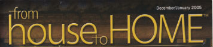
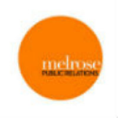

Kim Vining-Malakowsky
Company: Publication Services of America/Inspired Home
Headquarters: Atlanta, GA & Fargo, ND
Role: Publisher/Editor-in-Chief
Products: Consumer magazines covering home interior design, weddings, and men's lifestyle
Feedback: I want you to know how important you have been to PSA Magazines over the past many years. PSA succeeds in part due to writers like you who have been loyal, innovative and flexible."
Chris Ytuarte
Company: Bar Business Magazine
Headquarters: New York, NY
Role: Editor-in-Chief
Products: Trade publication for bar owners and bartenders covering business and culinary trends in bartending.
Feedback: "Thanks for all your great contributions to the magazine over the years. You have been, by far, the most reliable freelancer I’ve worked with who always produced quality content to boot."
Kristine Heine
Company: Global Communicators
Headquarters: Washington, D.C.
Role: Executive Vice President
Focus: Business-to-Business and Corporate Public Relations
Feedback: "I just shared your story ('Made in the Shade,' Fresh Cup Magazine) with my CEO and told him how impressed I was with your diverse stories and their publications. I also said you were by far the most productive of all the reporters who went on the 3 trips we took to Honduras last year (tourism/hospitality, light manufacturing, and agribusiness). The FIDE people (Honduras) were very pleased with the articles, by the way. I hope one of these days we get another client and a budget for press trips so I can invite you somewhere else!"

Kelley Weaver
Company: Melrose Public Relations
Headquarters: Santa Monica, CA
Role: Founder/CEO
Products: Public Relations, consumer products and services
Feedback:('A League of Their Own,' June 2015) was astonishing! Demi Stevens is a beloved client of ours, and you magically highlighted all of them! Your writing is impeccable, and while Demi is a tough one to impress, we have to say you blew everyone’s socks off, including hers! Working with you is an absolute pleasure and the entire Melrose PR team looks forward to future partnerships to highlight our other clients just as seamlessly."
Hayley Mitchell
Company:Media That Deelivers Publishing
Headquarters: Scottsdale, AZ
Role: Editor-in-Chief
Products:Custom publishing for hotels and resorts; Regional lifestyle magazines for Phoenix Metro
Feedback: "I have worked with Elyse Glickman since 2004, when she and joined forces for a story focused on luxury scotch and golf resorts that ran simultaneously in Patterson’s Beverage Journal and Estates West Golf. I was so impressed with her writing, story angles and even photography that I since have hired her back for several of our custom publishing magazines for resort hotels (including JW Marriott, La Quinta and Hotel Del Coronado) as well our Arizona Foothills and Estates West magazine web sites. I believe her versatility and creativity would make her an asset to any lifestyle publication, either in print or on line."
Francine Cohen
Company: Food & Beverage Magazine
Headquarters: New York, NY & Las Vegas, NV
Role: Editor
Focus: Business-to-Business and Corporate Public Relations
Feedback:"I was introduced to Elyse Glickman’s work as a writer and editor via Beverage Industry News, and really enjoyed working with her during our time at Food & Beverage Magazine. While I gave her freelance assignments focused on restaurant industry trends (such as interior design, economy-driven promotions and the evolving industry of food tourism in the U.S.), she had a nice way of making her copy engaging while hitting the necessary business issues. She also did a fine job on pieces that had her traveling to other cities, from San Diego to Calgary to Montego Bay, Jamaica, to show our readership what restaurateurs were doing to get and retain customers in these places. She is also exceptionally good at meeting her deadlines and taking direction when and if rewrites are needed."